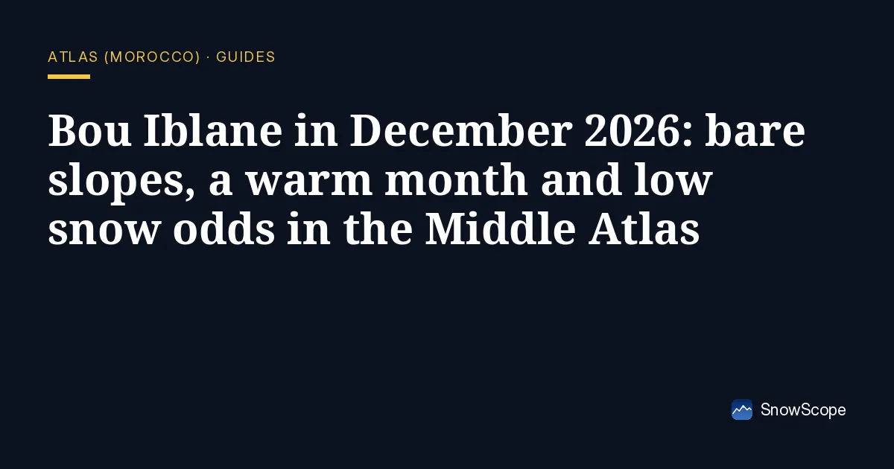
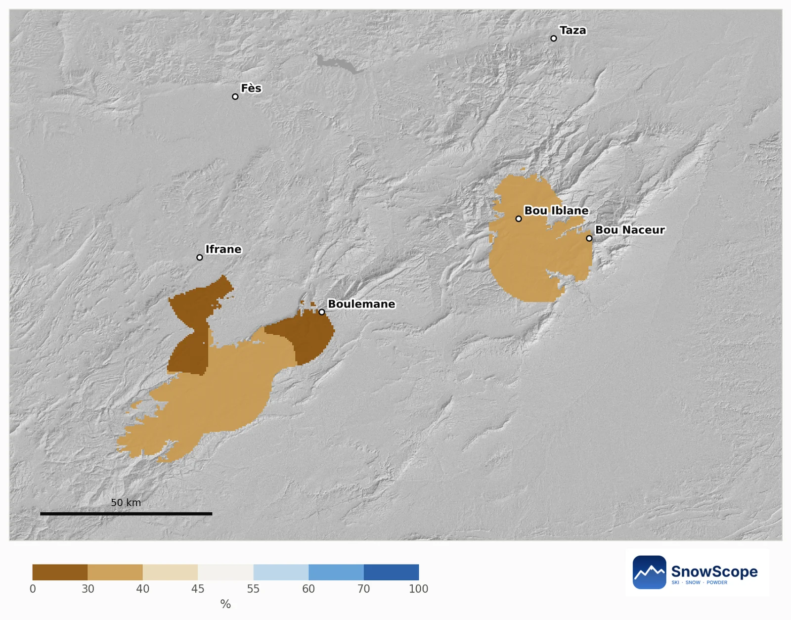
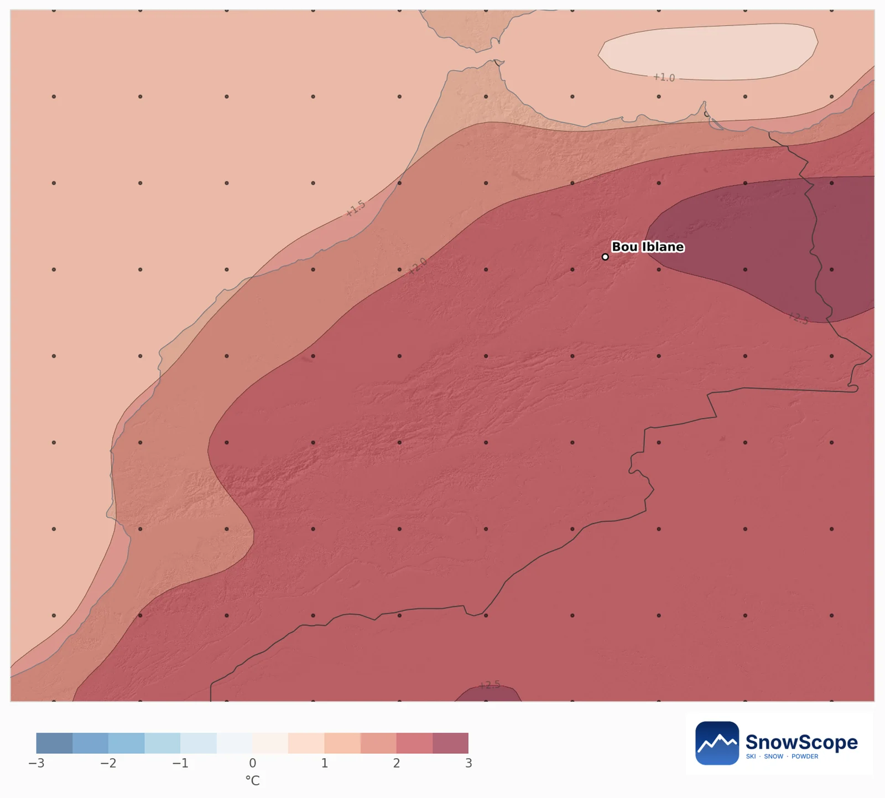

Bou Iblane in December 2026: bare slopes, a warm month and low snow odds in the Middle Atlas
Bou Iblane on 10 November shows no snow across its high ridge or the surrounding peaks of the eastern Middle Atlas. The December outlook is decidedly warm and tilts the snow odds downward: where these mountains usually catch winter snow, this year the chance of more than average is just 30 to 39 percent.
See the live snow forecast for Bou Iblane in the SnowScope appSnow depth, powder alerts and the 3D map, free.

The bare massif today
Walk the high ground around Bou Iblane and you find bare rock and scree. The SnowScope map of 10 November shows no white at all within 60 km of the summit at 2700 m. We show the terrain instead: the long Bou Iblane ridge itself, and to the east the separate mass of Bou Naceur. These are the summits where winter snow first takes hold when the season turns.
In November the Middle Atlas is still warm and dry. The region's 13 mountain grid cells all lean towards less snow than past Decembers, and none show a signal of lean towards more. This tilt is driven by warmth, not by a dry atmosphere.
What December usually brings
High on Bou Iblane near 2700 m, a typical December deposits 23 cm of new snow. By 31 December, only 5 cm remains on the ground. The sun and the warm spells between storms melt most of it. These are dry mountains where snow does not accumulate unless cold persists or fresh powder comes daily.
The range from less snowy to more snowy Decembers in the past runs wide: a quarter of past winters ended with no snow at all, while a quarter had 11 cm or more. This year's outlook narrows that range downward. The odds of ending December deeper than the typical 5 cm stand at only 30 percent.

Heat is the main driver
The 51 forecasts from the European weather centre agree strongly on one point: December will be warm. Ninety-six percent of them predict above-average temperatures, with an average warming of 2.3 degrees Celsius across the Middle Atlas. Such broad agreement on warmth is rare.
On precipitation the forecasts split: 41 percent are wetter than usual, 59 percent are drier. On average they predict 2 percent more rain and snow than a typical December's 42 mm, a small surplus. Yet in these mountains, temperature matters more than total precipitation. Snow responds to both: it tracks precipitation closely (correlation 0.86), but warmth pulls snow away (correlation -0.38). A few degrees of extra heat turns falling snow into rain on lower slopes and hastens melting on higher ones.


Which past Decembers match this pattern
The seasonal system finds its closest historical matches in December 2022, December 2010 and December 2002. These three winters shared warm air masses and sparse snowfall over the Atlas. None delivered a good snow base by month's end.
Yet history also shows an escape clause: a single powerful Atlantic storm can reverse the picture within days. When cold air and organised precipitation align, Bou Iblane and its neighbour peaks turn white fast. Such storms are uncommon in December but not impossible. The monthly outlook is a tilt of the probability, not a forecast written in stone.

Where to look when snow does arrive
If December brings a snow event, the high ridge of Bou Iblane will catch it first, especially on north-facing slopes above 2700 m. These aspects hold snow longest because the winter sun stays low and weak. South-facing slopes shed their cover quickly once a thaw begins.
The difference between a bare month and a snowy surprise often narrows down to a week or two in early December. Watch the 7-day weather forecast closely. When forecasters call for a cold, wet system from the north-west, that is when to plan your ascent. Between such systems, expect melting and retreat.
Tips for skiers
- Plan hikes on Bou Iblane using the 7-day forecast, not the monthly outlook. Weekly guidance tells you when snow is actually falling.
- After any December storm, head for north-facing slopes and crests above 2700 m where snow lingers longest in the strong winter sun.
- Check the SnowScope map before you depart. In a warm December, snow on these high slopes often melts within three to five days.
- Bring extra water and sun protection: even when fresh snow lies on high ground, the December sun at 2700 m is bright and the air is dry.
- If you plan a winter traverse of the ridge, start early in December and monitor forecasts daily. A warm, bare month can turn to white overnight when Atlantic storms arrive.
About these numbers
Resort snow depths are the deepest snow on the resort's upper slopes on the date shown; they are estimates for an area, not a measurement at one point. Forecasts can change. Always read the official avalanche bulletin before going off-piste.
Cite this report
For research, teaching or the press: the numbers and charts are free to reuse under CC BY 4.0 with this citation.
SnowScope (2026), Bou Iblane in December 2026: bare slopes, a warm month and low snow odds in the Middle Atlas, https://snowscope.app/blog/en/2026/11/bou-iblane-december-2026-snow-outlook.html, accessed 2026-11-10
SnowScope (Atlas Labs). (2026, November 10). Bou Iblane in December 2026: bare slopes, a warm month and low snow odds in the Middle Atlas. SnowScope snow reports. https://snowscope.app/blog/en/2026/11/bou-iblane-december-2026-snow-outlook.html
BibTeX
@misc{snowscope2026bouiblanedecember2026sno,
author = {{SnowScope (Atlas Labs)}},
title = {Bou Iblane in December 2026: bare slopes, a warm month and low snow odds in the Middle Atlas},
year = {2026},
month = nov,
howpublished = {\url{https://snowscope.app/blog/en/2026/11/bou-iblane-december-2026-snow-outlook.html}},
note = {Published 2026-11-10 10:48 UTC; accessed 2026-11-10}
}· CC BY 4.0 · Methods, data and tools →
Follow Bou Iblane
Free: a message when fresh snow is coming, and the forecast every morning.
More snow reports

How much water the Atlas snow may hold in February 2027: the European seasonal forecast is about 3 °C warmer and wetter in the west and south, so snow odds stay low across Morocco's river basins.

Snow line near 3,710 m from 8 to 12 November: rain at Oukaïmeden and Imlil, snow on Toubkal's summit. Map and chart.

Only 8 cm of snow sits on the highest Atlas peaks today. No snow at any ski resort. Cover is shrinking fast through mid-November.